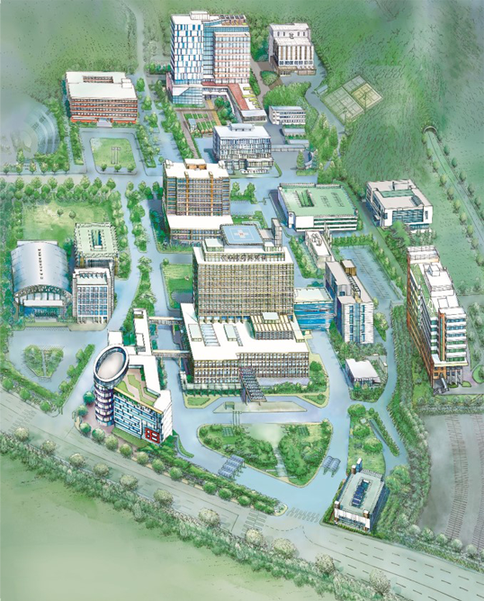

-
1 아주대학교병원
- 임상시험센터
- 인체유전체자원센터
- 지역의약품안전센터
-
2 미래관
- 첨단의학연구원 (연구행정팀, 의료기술사업팀)
- 외상연구소
- 연구중심병원 육성R&D사업단
- 의학연구협력센터
-
3 송재관
- 인플라메이징중개의학 연구센터(MRC)
- 유전체불안정성제어 연구센터(SRC)
- 아주중개오믹스센터
- 노인보건연구센터
- 뇌질환융합연구센터
- 면역네트워크 파이오니어연구센터
-
4 의생명과학관
- 임상역학센터
- 세포치료센터
-
5 실험동물연구센터
-
6 홍재관
- 의료정보연구센터 (의료정보학과)
- 바이오뱅크사업단
- 첨단의학오픈랩
- 의약바이오데이터센터
- 3차원 면역시스템 핵심연구지원센터
- 개방형실험실운영 지원센터

1
2
3
4
5
6